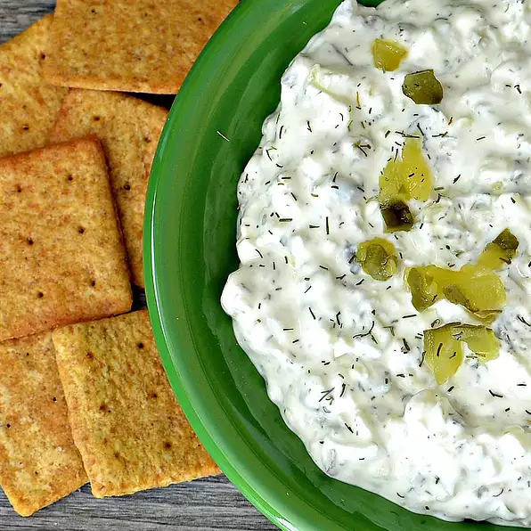

Dill Pickle Dip

Description
This is a wonderful dip to make for friends, family, or to enjoy by yourself. The ingredients are common and the preparation is minimal.
If you are interested in creamy, cheesey deliciousness and in making this dish. Please gather the required ingredients and follow the instructions provided.
Ingredients
- 8 ounce package cream cheese, at room temperature
- 1 cup chopped dill pickels, or more to taste
- 1/4 cup finely chopped sweet onion
- 2 tablespoons pickle juice, or more to taste
- 1 teaspoon dried dill weed
- 1/2 teaspoon kosher salt
- 1 pinch freshly ground black pepper, or to taste
Steps
- Stir cream cheese in a bowl with a wooden spoon until smooth.
- Stir in dill pickles, onion, pickle juice, dill weed, salt, and pepper until evenly distributed.
- Refrigerate before serving, at least 1 hour.